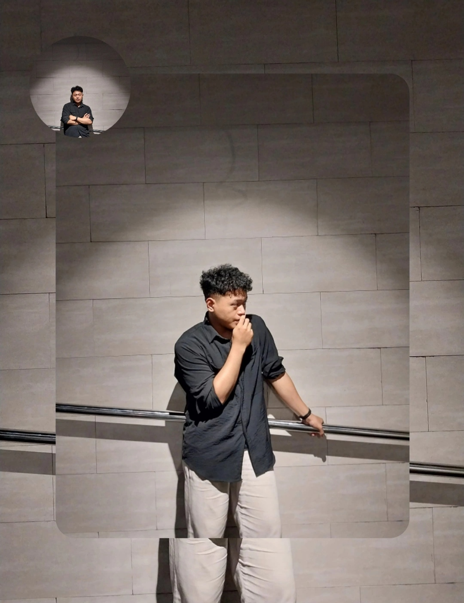
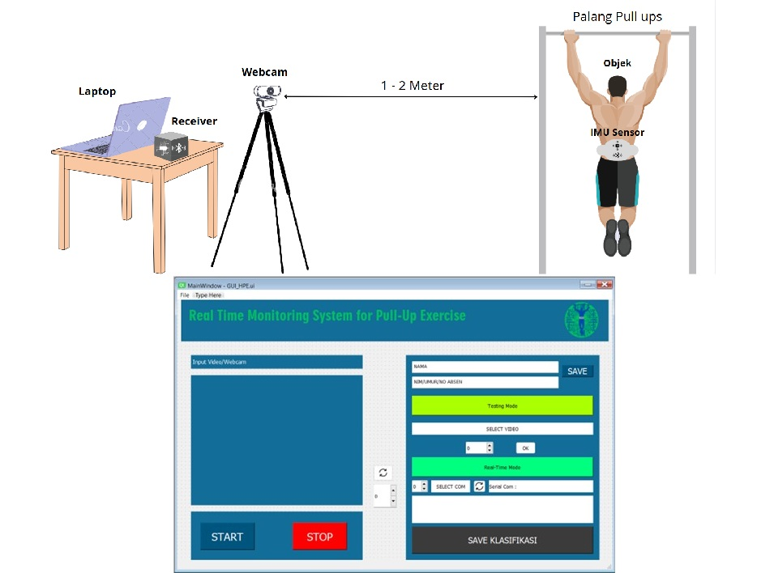

Andri Firnanto | Electrical Engineer (Control System Specialist) | Automation Enthusiast
Saya adalah seorang fresh graduate Teknik Elektro dari Universitas Negeri Malang dengan fokus pada sistem kendali. Mempunyai pengalaman dalam pengembangan sistem otomatisasi berbasis mikrokontroler, pemrograman Python, dan integrasi sensor. Serta sedang mempelajari pemrograman web dengan HTML dan CSS. Saya berkomitmen untuk menghadirkan solusi teknologi yang efisien dan inovatif.
Educational Background
Selama masa studi, saya mengembangkan minat mendalam dalam bidang otomatisasi dan pemrograman, serta mengasah keterampilan dalam desain dan implementasi sistem kendali berbasis mikrokontroler, sensor, dan perangkat lunak.
Program Studi S1 Teknik Elektro 2020-2024
Dengan fokus studi pada sistem kendali.
Nilai akhir 3,57/4.00
Jurusan Teknik Elektronika Industri Tahun 2017-2020
Mempelajari dan menerapkan pelajaran dasar elektronika dan kelistrikan.
Nilai akhir 81,64/100
Skills
Bahasa Pemrograman :
- Pemrograman Python
- Pemrograman C++
- Pemrograman PLC
Software yang sering digunakan :
- Visual Studio Code (VSCode)
- QTDesigner
- CX-Programmer
- Eagle Autodesk
- Arduino
Projects
Fungsi:
Mendeteksi dan Mengklasifikasikan gerakan olahraga pull-ups berdasarkan kelengkapan gerakan.
Bahasa Pemrograman yang digunakan :
- Pemrograman Python
- Pemrograman C++
Software yang digunakan :
- VSCode untuk Program System Monitoring dan Memproses Input Sensor
- Arduino untuk Program baca, kirim dan terima data sensor
- QTDesigner untuk Desain GUI
Hardware yang digunakan :
- Kamera Webcam
- Sensor IMU
- Arduino nano
- HC-05 Bluetooth Transceiver

Experience
PT. INDOPRIMA GEMILANG adalah salah satu dari sekian banyak perusahaan senior yang telah lama berkecimpung di bidang manufaktur komponen kendaraan bermotor skala kecil hingga truk heavy-duty untuk berbagai perusahaan manufaktur otomotif internasional.
PT. INDOPRIMA GEMILANG berkomitmen penuh untuk menjaga kualitas produksi sesuai dengan standar perusahaan. Seluruh proses, mulai dari pemilihan material, tahap produksi, hingga quality control dilakukan dengan teliti agar produk yang dihasilkan sempurna.
Menjadi peserta magang yang memiliki peran untuk:
1. Membantu dalam desain, pengujian, dan implementasi sistem otomatisasi untuk mendukung produktivitas perusahaan
2. Berkontribusi dalam pemasangan dan kalibrasi sensor serta aktuator untuk berbagai aplikasi otomatisasi.
3. Membantu tim dalam menganalisis dan memperbaiki gangguan pada sistem kendali otomatis.
4. Berkolaborasi dengan tim untuk menyusun laporan teknis dan menyelesaikan proyek tepat waktu.
Resume PDF
Download Resume PDF